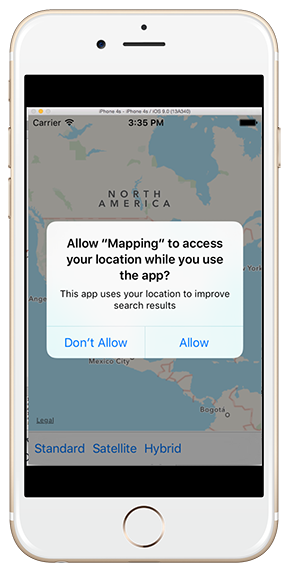
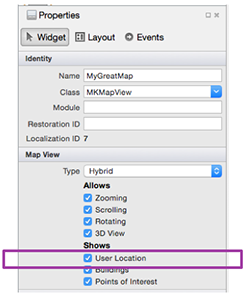
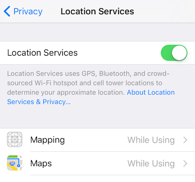

Duration
15 minutes
Goals
In this exercise, you will continue working on the application in the 1st exercise and add support to determine the user location and prompt the user to launch the privacy settings when the CoreLocation API is not allowed. When you are finished, the application will look something like: 
Required Assets
There is a Exercise 2 folder included with this lab exercise which contains a completed project if you'd like to compare your work.
Challenge
You will be continuing on with your code from the first lab, if you did not finish that lab, you can use the Completed project in the Exercise 1 folder in the lab materials.
The high-level procedure is shown here. You can use this information to guide your implementation or use the step-by-step procedure given below.
-
You will need to request access to Location Services using the
CLLocationManager.RequestWhenInUseAuthorizationmethod. - Next, edit the info.plist to add NSLocationWhenInUseUsageDescription to the list and a description of why you want to use location services.
-
Enable the
ShowUserLocationproperty on yourMKMapViewto show the device's current location on the map. - Turn off location services for the app and then add the code to prompt the user and pass them to the Settings when Location Services are not enabled.
Steps
Request Location Services
We need to request location services permissions before we can use the user's current location.
-
First, in the ViewController.cs class, create an instance of the
CLLocationManagerand store it in a class-level field. The lab will name the field locMan.-
You will need to add
usingdefinitions for theFoundationandCoreLocationnamespaces. -
We store this as a class-level field so the GC doesn't collect it; since the authorization prompt done by iOS is dependent on the
CLLocationManagerinstance, it must stay alive during the entire sequence; and that sequence is asynchronous to the UI itself (e.g. it's a prompt displayed above the application and independent of our app code). Therefore, we need to keep the instance around until the prompt is dismissed at some future time - the easiest way to manage that is to keep a reference to it in our ViewController class.
-
You will need to add
-
Next, in the
ViewDidLoadmethod, use theRequestWhenInUseAuthorizationmethod on your locMan instance to request location service permissions.
Add a Location permission description to info.plist
Using Visual Studio for Mac:
-
Next, open the info.plist file and add a new entry for "NSLocationWhenInUseUsageDescription" to include a description telling the user why using their location will be beneficial.
- You will need to switch to the Source view to add this entry.
- You should get Intellisense for the key name.
- Set the text to something like: "This app uses your location to improve search results".

Using Visual Studio on Windows:
-
Next, we will add a "NSLocationWhenInUseUsageDescription" to the info.plist file to include a description telling the user why using their location will be beneficial.
- To edit the XML directly, right-click on info.plist and choose Open With....
- Select XML (Text) Editor from the Open With program list. This will provide XML syntax highlighting and some code-completion assistance.
- Right before the closing tag of the dict element, add a new key element.
- Set the text of the key element to "NSLocationWhenInUseUsageDescription".
- Immediately after the new key element, add a string element.
- Set the text to something like: "This app uses your location to improve search results".
Add support to show the device's location on the map
- Check the User Location property under the Shows section in the map properties on the storyboard. 
-
Alternatively, in the ViewController code, you can set the
ShowsUserLocationproperty to true on theMKMapView. This is exactly what the designer setting is doing. - Now, run the application - you should get a prompt as soon as the app launches which will include your description text you added into the info.plist. If you allow the location usage, the map will draw your current location with a little marker. (Note: in the simulator the current location can be set wherever you like through the Debug > Location menu).
Launch location settings from within the application
Now, let's see what happens if the user denies location services. We need to consider how the application should react if that happens.
- As a first step, open the device or simulator, open the Settings.app, and navigate to Private > Location. Your app should be listed here and indicate that it can use Location Services "While Using". 
- Tap the "Mapping" entry and change the setting to "Never" to disallow location services.
- Run the app. What happens?
-
Let's try to gracefully respond to the problem. Add an override for the
ViewDidAppearmethod to your ViewController. We want the app to be visible before we prompt the user, and this is a good spot to do that. -
Check to see if we were granted location permissions using the static
CLLocationManager.Statusproperty. This returns an enumeration indicating our allowed privileges. If we are not allowed to use Location Services, then we will need to prompt the user and possibly jump to the settings app. -
You can request to open the Settings app by using the static method
UIApplication.SharedApplication.OpenUrlwith the special URL defined by the static propertyUIApplication.OpenSettingsUrlString. In older versions of iOS, there's no built-in support for this, but we can still prompt the user. -
Use the
UIAlertControllerAPI to display an alert to the user.- Set the title to "Unable to determine location".
- Set the message to "This application works best when it can determine your current position. Would you like to go to Settings to enable location data?"
- Add both a YES and NO button.
- If YES is clicked, open the settings app.
UIAlertController.
var alertController = UIAlertController.Create(
"Title Goes Here",
"Message Goes Here",
UIAlertControllerStyle.Alert);
// Add YES and NO buttons
alertController.AddAction(UIAlertAction.Create(
"Yes", UIAlertActionStyle.Default,
alert => {
/* Code to execute when YES is clicked */
}));
alertController.AddAction(UIAlertAction.Create(
"No", UIAlertActionStyle.Cancel, null));
// Show the alert
this.PresentViewController(alertController, true, null);
- Make sure Location Services are not allowed for your app and then re-run your application. You might need to kill the running app by double-tapping the Home button. On the iOS Simulator, you can use the SHIFT+⌘+H accelerator key to simulate the Home button press, just type this twice in quick succession to see the app switcher UI, and then drag your app up to kill it.
- You should now be prompted to turn on Location Services; it should switch to the settings app automatically when you say "YES". Try turning on Location Services and returning to your app (while it's still running).
- Try turning permissions on and off and seeing how your app responds.
Summary
Congratulations! In this lab exercise, you added support to your application to show the device's current location on the map and, when permissions were not available, created an alert to provide a description of why the application needs to show location and launched the settings directly from your application.